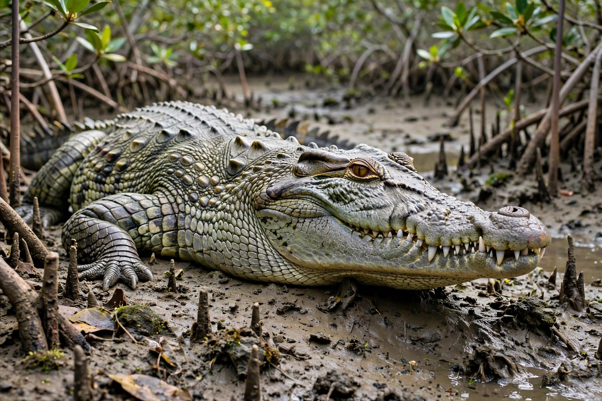

American crocodile
| American crocodile | |
|---|---|
 | |
| American crocodile basking in Florida | |
| Kingdom | Animalia |
| Family | Crocodylidae |
| Genus | Crocodylus |
| Species | C. acutus |
| Binomial name | Crocodylus acutus Cuvier, 1807 |
| Conservation | Vulnerable (IUCN) |
The American crocodile (Crocodylus acutus) is a species of crocodilian found in the Neotropics. It is the most widespread of the four extant species of crocodiles found in the Americas, ranging from South Florida and the Caribbean coasts of Mexico through Central America to northern South America (Colombia and Venezuela), and along the Pacific coast to northern Peru.
Description and habitat
Adults typically reach 4 to 5 metres in length, with large males occasionally exceeding 6 metres. American crocodiles are distinguished by a broader, more triangular snout than the American alligator, and by teeth that interlock visibly when the mouth is closed. Unlike most crocodilians they are frequently found in salt water: they inhabit brackish coastal lagoons, mangrove swamps and river mouths, and possess lingual salt glands that let them tolerate — and disperse across — seawater. They are generally shy and reclusive compared with other crocodiles, though attacks on humans occur.
Conservation
Hunting for skins and habitat loss drove steep declines in the 20th century. In the United States the species was listed as endangered in 1975; protection allowed the Florida population to recover, and it was downlisted to threatened in 2007. The IUCN lists the species globally as Vulnerable. In South Florida it shares its range with the American alligator, one of the few places where alligators and crocodiles naturally coexist.